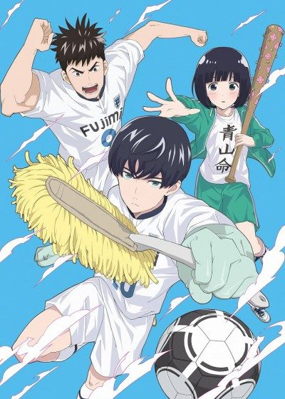
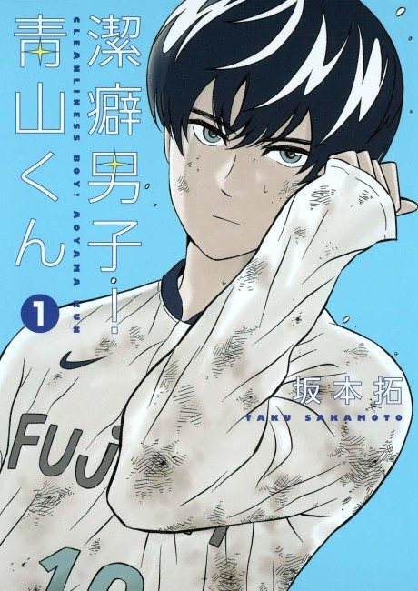

Clean Freak! Aoyama kun
潔癖男子! 青山くん
Aoyama is a football genius and a total neat freak who won't head the ball or slide tackle, and his high school team has to deal with it.
After the anime, read the manga from Chapter 39.
6.7AniList score
—Animeter, no votes yet
12episodes
Rate it or report where you stopped
Anime finished. Where does the manga pick up?
Start at Chapter39
The anime adapts up to chapter 38 (volume 7 starts at 39). It skipped a few comedic chapters (30, 34, 35). The manga is finished.
138113 end
Season 1Start reading here
More like Clean Freak! Aoyama kun
 Manga Ch. 1188.1
Manga Ch. 1188.1
 Manga Report 1097.8
Manga Report 1097.8
 Unclear7.9
Unclear7.9
 Manga Ch. 1307.6
Manga Ch. 1307.6
 Unclear8.2
Unclear8.2
 Manga Ch. 1837.8
Manga Ch. 1837.8
 Done7.3
Done7.3
 Manga Ch. 1568.3
Manga Ch. 1568.3
 Unclear7.6
Unclear7.6
 Manga Ch. 807.1
Manga Ch. 807.1
 Manga Ch. 707.1
Manga Ch. 707.1
 Manga Ch. 1217.1
Manga Ch. 1217.1